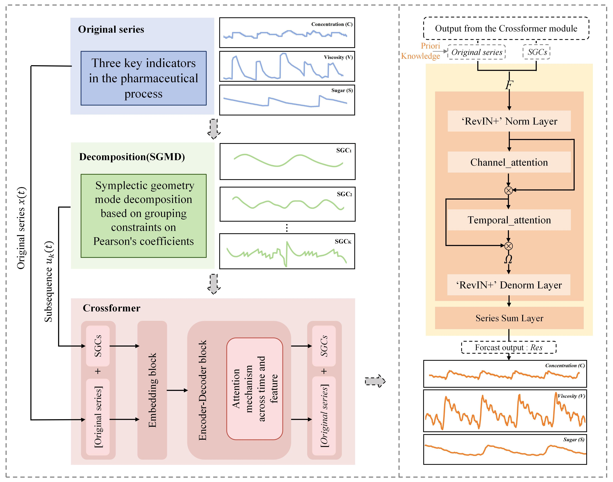

BPSN · Research project
A Soft Sensor Net Based on the Symplectic Decomposition–Global Attention Reconstruction Architecture for Biopharmaceutical Industry
Combine structured signal decomposition, forecasting, and global-attention reconstruction for soft sensing in biopharmaceutical processes.

Research focus
Resources
The repository contains the available paper and implementation resources for this work. See its README for code entry points, dependencies, and data requirements.